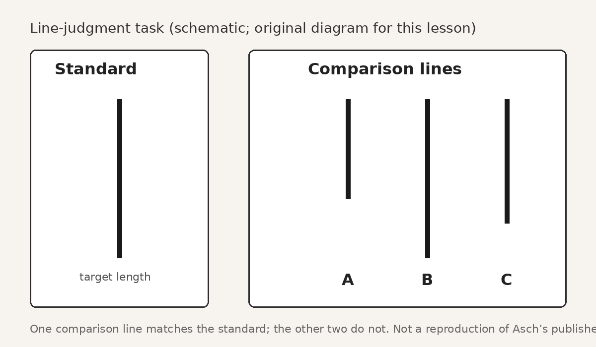

Sunday · Psych / soc
: the concept, then and 's testing experiments at Stanford in the mid-1990s
What means — a situational predicament where the risk of confirming a negative stereotype about one's group can undermine performance in the domain where that stereotype applies — then and 's 1995 experiments with Black and White taking difficult items under different framings.
This lesson presents as a concept first, then and 's 1995 experiments as the foundational case study. The core finding: when a difficult verbal test was framed as diagnostic of ability (making race-related stereotypes about intelligence salient), Black Stanford students underperformed relative to White students with matched SAT scores; when the same test was framed as nondiagnostic (a laboratory problem-solving task, not an ability test), the performance gap was eliminated or substantially reduced. The samples were , a selective and high-achieving population. The tests were difficult items from the . is a situational mechanism, not a trait or an explanation for all achievement gaps. The literature includes successful replications, meta-analyses showing moderate effect sizes, and ongoing debates about boundary conditions, replicability, and practical interventions. This lesson does not claim accounts for all group differences in testing or that it operates identically across all contexts. It is one mechanism among many. , , and 's 1999 findings on women and math are included as a parallel case. The concept has been extended to other stereotyped groups and domains; results vary. Honesty requires naming the limits: college samples, lab conditions, effect-size variation, and discussions.
Select any words, or tap a dotted term.
- 1992 Steele and Aronson begin collaboration , a social psychologist at Stanford studying stigma and identity, and , a postdoctoral researcher, began the experimental program testing whether situational cues about race and ability could affect test performance.
- 1995 Journal of Personality and Social Psychology and published 'Stereotype Threat and the Intellectual Test Performance of African Americans' in , reporting four experiments showing that of a difficult verbal test undermined Black students' performance relative to matched White students.
- 1994–1995 The Bell Curve controversy 's book (1994) reignited public debates about IQ, race, and heredity. and 's work offered a situational alternative: group differences in testing could reflect contextual threats, not fixed abilities.
- 1997 Steele's American Psychologist essay published 'A : How Stereotypes Shape Intellectual Identity and Performance' in , synthesizing the theoretical framework and broadening the argument to domain .
- 1999 Spencer, Steele, and Quinn on women and math , , and published 'Stereotype Threat and Women's Math Performance' in Journal of Experimental Social Psychology, showing that women underperformed on difficult math tests when gender stereotypes were made salient, and performed equally to men when the threat was removed.
- 2006 Walton and Cohen's meta-analysis Gregory Walton and conducted early meta-analytic work consolidating findings across studies. Effect sizes were moderate and varied by domain and population.
- 2008 Stereotype threat in high-stakes testing Researchers began testing whether operates in real-world high-stakes exams (AP tests, SAT, GRE). Results were mixed; some field studies found effects, others did not. Lab-to-field generalization became a key debate.
- 2012 Values-affirmation interventions and colleagues published long-term results of brief values-affirmation writing exercises that reduced and improved academic outcomes for minority middle-school students, showing potential for intervention.
- 2015 Replication debates intensify As psychology entered the crisis era, became a target for attempts. Some succeeded; some failed. Meta-analyses and methodological critiques debated effect robustness and .
- 2020s Consensus and boundaries Contemporary consensus: is a real and replicable phenomenon under specific conditions (difficult tasks, domain-identified individuals, salient stereotypes), with moderate effect sizes. Boundary conditions, individual differences, and intervention scalability remain active research areas.
The concept
What stereotype threat means: a situational threat, not a person's trait, arising when a negative group stereotype becomes relevant to performance
is the risk — experienced in a specific situation — that one might confirm a negative stereotype about a social group to which one belongs. The threat is situational, not dispositional. It is not inside the person as a stable trait; it arises when contextual cues make a stereotype relevant. The mechanism is straightforward. A person belongs to a group (Black Americans, women, older adults) about which a negative stereotype exists in a particular domain (intelligence, math ability, memory). That person enters a situation (a test, a job interview, a classroom) where performance in that domain will be evaluated. If the situation makes the stereotype salient — through explicit mention, through demographic questions, through the composition of the room, through the framing of the task as diagnostic of the stereotyped ability — the person may experience threat. The worry is: if I perform poorly, I will confirm the stereotype, both in others' eyes and possibly in my own. That worry can consume cognitive resources, increase , trigger vigilance, and undermine the very performance it fears. The result is a embedded in the situation.
is not the same as believing the stereotype about oneself. A Black student who firmly rejects the notion that Black people are less intelligent can still experience when taking an ability test in a context that makes race salient. The person does not have to internalize the stigma; they only have to be aware that the stereotype exists and that others might judge them through it. The threat is also distinct from general test . It is specifically tied to group identity and to domains where stereotypes apply. A woman taking a math test may face ; the same woman taking a verbal test typically will not, because the cultural stereotype links women negatively to math, not to language. Change the situation — by framing the test as nondiagnostic, by removing race or gender cues, by creating a context where the stereotype is not relevant — and the threat can be reduced or eliminated.
The concept matters because it offers a situational, environmental explanation for group differences in performance that have often been attributed to fixed traits or internalized deficits. If Black students on average score lower than White students on a standardized test, one explanation is differences in preparation, resources, or schooling. Another, more pernicious explanation is differences in innate ability. research proposes a third explanation: the testing situation itself, laden with historical and cultural meanings about race and intelligence, can suppress the performance of students from negatively stereotyped groups. The same students, in a threat-reduced context, can perform at levels matching their actual preparation and ability. That is the claim , , and others tested in the lab in the 1990s.
The mechanism
How Steele and Aronson built a situation where stereotype threat could be measured and manipulated
and designed their 1995 experiments at Stanford to isolate as a causal variable. They recruited Black and White undergraduates matched on SAT verbal scores, ensuring the groups had equivalent prior ability. They gave all participants the same test: difficult items drawn from the verbal section of the GRE, calibrated to be challenging even for high-achieving Stanford students. The task was hard enough that struggle was normal. The manipulation was in the framing. In the diagnostic condition, participants were told the test measured genuine intellectual ability — specifically, verbal reasoning and problem-solving skills. This framing made ability relevant, and for Black participants, it activated awareness of the cultural stereotype that Black people are intellectually inferior. In the nondiagnostic condition, the same test was described as a laboratory exercise to study problem-solving, with no mention of ability measurement. This framing reduced or removed the stereotype's relevance.
The results followed the hypothesis. Under , Black students underperformed relative to White students with matched SAT scores. Under , the performance gap was substantially reduced or eliminated. The effect was not due to differences in preparation or baseline ability; those were controlled by . It was due to the situational cues embedded in how the test was described. In a further experiment, and manipulated stereotype salience more directly. They asked some participants to indicate their race on a demographic form immediately before taking the test. That simple checkbox was enough. Black students who checked their race before the test performed worse than Black students who were not asked about race until afterward. White students were unaffected by the race question, because no negative stereotype about White intelligence was in play. The mechanism was situational, specific, and reproducible.
and also measured downstream consequences. They gave participants word fragments to complete (for example, _ _ CE could become RACE or FACE or PACE) and coded how often participants generated stereotype-related words. Black students under completed more fragments with race-related words, suggesting heightened vigilance and preoccupation. They also asked participants afterward how much they enjoyed the test and how important the tested ability was to them. Black students under threat reported less enjoyment and were more likely to distance themselves from the domain — an early sign of what called . The lab captured not only performance decrements but also the psychological processes that might, over time, lead people to stop caring about domains where they face chronic threat.
The case
Stanford, verbal GRE items, and the vanishing performance gap under nondiagnostic framing
Picture the participant's experience in the diagnostic condition. You are a Black undergraduate at Stanford, one of the most selective universities in the country. You answered an ad for a study on verbal ability. You arrive at a psychology lab, and a researcher explains: this test measures your intellectual ability, specifically your capacity for verbal reasoning and analytical problem-solving. You sit down. The test begins. The items are hard — GRE-level hard. You were admitted to Stanford; your SAT verbal score is high. But these questions are designed to push you to the edge of your ability. As you work, a thought hovers: there is a stereotype about Black people and intelligence. You know it. Everyone knows it. The test is measuring your ability. If you do poorly, you will confirm the stereotype. You do not believe the stereotype about yourself, but the test is diagnostic, the researcher said so, and the result will be recorded. That awareness — not panic, not certainty, just awareness — sits in the back of your mind, siphoning attention, tightening focus, raising the stakes of each question.
Now picture the nondiagnostic condition. Same test, same items, same difficulty. But the framing is different. The researcher says: we are studying how people solve certain kinds of verbal puzzles. This is a laboratory task to help us understand problem-solving strategies. It is not a test of your ability. You sit down. The items are still hard. You still struggle. But the struggle is just struggle, not evidence about your group. The stereotype is not activated because the task is not framed as measuring the thing the stereotype is about. You work through the problems. Some you get, some you do not. The cognitive load of vigilance and worry is lighter. Your is freer to focus on the task. When and scored the tests, the racial performance gap narrowed or disappeared. Same students, same test, different situation.
The case rests on controlled comparisons, not anecdotes. and reported four experiments in their 1995 paper. Across studies, the pattern held: depressed Black students' performance relative to matched White students; eliminated or substantially reduced the gap. The sample was not representative of all Black Americans or all college students. These were , a highly selective and academically accomplished group. The test was not a real high-stakes exam; it was a lab task with no consequences beyond the study. Those limits are real. But they also make the finding sharper: even among students with demonstrated high ability, in a low-stakes lab setting, situational cues about race and ability were sufficient to shift performance. If threat operates there, it likely operates in higher-stakes, less supportive contexts as well.
The case includes a parallel finding. The same year and others began testing with Black students and intelligence stereotypes, they also explored whether the mechanism extended to other groups and domains. Women and math became the test case. The cultural stereotype holds that women have less mathematical ability than men. , , and , in a 1999 paper published in Journal of Experimental Social Psychology, gave men and women a difficult math test. When the test was described as one that typically shows gender differences (making the stereotype salient), women underperformed relative to matched men. When the test was described as one that does not show gender differences (neutralizing the stereotype), women performed equally. The mechanism generalized. was not only about race and intelligence. It was about any domain where a person's group is negatively stereotyped and the situation makes that stereotype relevant.
Contemporaneous elsewhere
The Bell Curve and the mid-1990s testing debates
and 's 1995 paper arrived in the middle of a charged national debate. In 1994, and published : Intelligence and Class Structure in American Life, a book arguing that intelligence as measured by IQ tests is substantially heritable, that IQ predicts life outcomes, and that average IQ scores differ by race, with Black Americans scoring on average lower than White Americans. The book suggested these differences might be partly genetic. was reviewed, critiqued, and debated across academia, policy circles, and popular media. Critics argued the book ignored environmental explanations, downplayed the malleability of IQ, and misused statistics to advance a hereditarian narrative. Supporters insisted the data were real and that ignoring group differences was a form of political correctness.
research offered an alternative story. and did not claim that all racial gaps in testing were due to , nor did they argue that preparation, resources, and schooling were irrelevant. But they demonstrated experimentally that situational factors embedded in the testing context itself could create or exaggerate group differences. If you tell Black students a test measures their intelligence, you activate a stereotype, and performance drops. If you remove that framing, performance recovers. The implication was clear: standardized tests administered under typical conditions — with demographic questions, high-stakes framing, and institutional contexts historically linked to racial sorting — might systematically underestimate the ability of Black students. The gaps treated as evidence of stable, possibly innate differences might instead reflect, at least in part, the situational psychology of being tested while stereotyped.

The timing mattered legally and politically as well. in college admissions was under legal challenge throughout the 1990s. Cases like Hopwood v. Texas (1996) and later (2003) asked whether race-conscious admissions violated equal protection. research was cited in amicus briefs supporting . The argument: if negatively stereotyped students face situational performance penalties on standardized tests, then test scores alone may not reflect potential. Diverse, supportive environments that reduce threat might reveal latent ability. The research did not settle the legal question, but it complicated the notion that test scores were neutral, objective measures of merit. It showed that what gets measured is partly a product of how the measurement is done — and who is in the room.
After
Replications, meta-analyses, interventions, debates, and the boundaries of the effect
became one of the most widely studied phenomena in social psychology. Researchers replicated the basic finding with different populations (Black students, Latino students, women in math and science, older adults on memory tasks, White men in athletics when compared to Black men), across different domains, and in multiple countries. Meta-analyses in the 2000s and 2010s synthesized the evidence. Hannah-Hanh Nguyen and Ann Marie Ryan's 2008 in Journal of Applied Psychology found moderate effect sizes across studies, with variation depending on whether the stereotype was highly relevant, the task was difficult, and participants were domain-identified. Gregory Walton and 's reviews similarly confirmed that is real and replicable, but not uniformly large or present in every context. Effect sizes are typically in the small-to-moderate range (Cohen's d around 0.3–0.5), meaning the effect is measurable and meaningful but not overwhelming.
Interventions followed the lab findings. If situational cues create the threat, changing the cues should reduce it. Researchers tested , values-affirmation writing exercises, , and growth-mindset teaching. and colleagues published results in Science (2006, 2009) showing that a brief values-affirmation exercise at the start of a school term — having students write about their core values — reduced the racial achievement gap in middle school over months and years. The mechanism: affirming values buffered students' sense of self, making them less vulnerable to in the classroom. Other interventions focused on tests, teaching , and creating inclusive classroom norms. Some interventions scaled successfully; others did not. The practical question remains: can be reduced at scale, in real schools and testing programs, or is it too contextually sensitive to fix with brief interventions?
debates intensified in the 2010s as psychology confronted its crisis. was a target. Some attempts succeeded; others did not. Critics pointed to (successful studies are more likely to be published than null results, inflating apparent effect sizes), heterogeneity in methods (different manipulations and outcomes make synthesis difficult), and boundary conditions that are not always clear. Field studies testing on real high-stakes exams (AP tests, SAT) produced mixed results. Some found effects; others found none. Lab-to-field generalization is harder than early proponents hoped. The debates have not overturned the concept; they have refined it. is not a universal law operating equally everywhere. It is a mechanism that emerges under specific conditions: when a task is difficult, when individuals care about the domain, when a negative stereotype is salient, and when the situation makes performance diagnostic of the stereotyped trait.
Current consensus among researchers is that is real, replicable under the right conditions, and moderate in size. It is one factor among many shaping group differences in academic and professional performance. It does not explain all gaps; preparation, resources, opportunity, and prior learning matter enormously. But it shows that testing contexts are not neutral, that situational cues can suppress performance, and that interventions to reduce threat can help — especially when combined with structural supports. The lesson is not that stereotypes alone cause inequality, nor that removing alone will erase it. The lesson is that situations matter, that performance is always socially embedded, and that making environments more supportive can reveal abilities that high-stakes, high-threat contexts obscure.
A question
A question to keep asking
If you belong to a group that is negatively stereotyped in a domain you care about — whether because of your race, gender, age, class background, accent, or any other identity — have you ever felt the situational weight of that stereotype while being evaluated, even if you do not believe the stereotype yourself? And if you have not experienced that form of threat, can you recognize the testing situations, workplaces, or classrooms where others might be carrying it, and what specific features of those situations could be changed to reduce the threat without lowering standards or pretending the stereotypes do not exist?
Fun fact
A checkbox was enough to trigger the effect
In one of and 's 1995 experiments, simply asking participants to check a box indicating their race on a demographic form before taking the test was sufficient to activate . Black students who indicated their race before a difficult verbal test performed worse than Black students who were not asked about race until after the test, and both groups were matched on SAT scores. The race question made group identity salient at the moment performance mattered. White students' performance was unaffected by the same question, because no negative stereotype about White people and intelligence was in the air. The finding underscores the situational nature of the threat: a single checkbox, placed at the wrong moment, can shift outcomes.